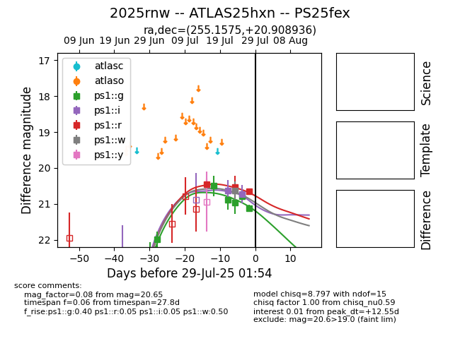

Target 2025rnw at 2025-07-29 01:54, see:
TNS: wis-tns.org/object/2025rnw
YSE: ziggy.ucolick.org/yse/transient_detail/2025rnw
alt names
2025rnw (yse,tns)
ATLAS25hxn (atlas)
PS25fex (panstarrs)
coordinates:
equatorial (ra, dec) = (255.1575,+20.90894)
galactic (l, b) = (41.1606,+33.31353)
photometry
last ps1::g=21.12, ps1::i=20.73, ps1::r=20.65, ps1::w=20.63
6 ps1::g, 2 ps1::i, 3 ps1::r, 1 ps1::w detections
